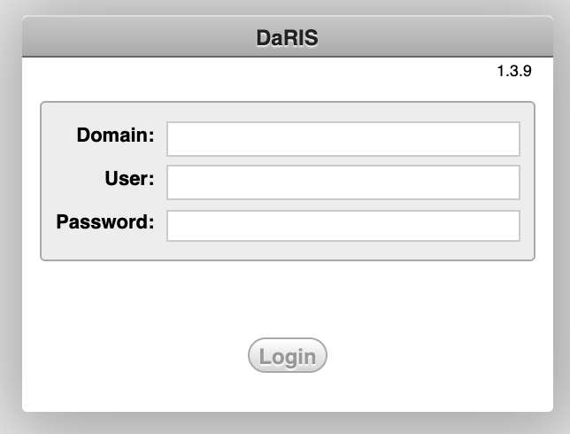
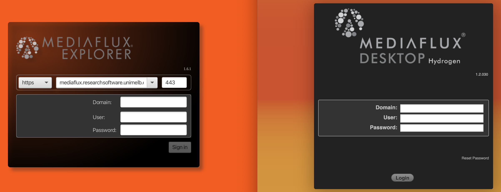

Getting Access#
This page will guide you through setting up access to DaRIS, Mediaflux, and Spartan. Approval may take a few days. Please submit your access requests early, so everything is in place when you need to get started!
DaRIS#
For complete instructions, please visit the DaRIS Guide.
Requesting Access
To request access to an existing DaRIS project, submit a request form via UoM Staff or UoM Students.
In the form, select Research Data Storage as the service. In the field “Describe your request”, include:
The DaRIS project ID you want to access
The access level required (usually guest)
Accessing the DaRIS Web Portal
After getting the accounts enabled, you’ll be able to access DaRIS via the Web Portal.
Fill in the following information to login:
Domain:
unimelb(for staff) orunimelb-student(for students)User:
<YOUR_UNIMELB_USERNAME>Password:
<YOUR_UNIMELB_PASSWORD>

Mediaflux#
For complete instructions, please visit the Mediaflux Guide.
Requesting Access & New Data Storage
Please contact your project leader to be added to an existing Mediaflux project.
New data storage allocations can be requested by any eligible UoM researcher in the Research Computing Portal.
Setting Up Multifactor Authentication (MFA)
Skip this step if it has not been made mandatory… This will make things much easier…
Download a smartphone app called Mediaflux Pocket (for Android and Apple devices).
Go to the Mediaflux Pocket Registration Portal on your PC and log in with your usual Mediaflux login details.
Click the QR code to unblur in the resulting screen. Open the Mediaflux Pocket app on your phone, click the orange + button in the bottom right of the app, and scan the QR code.
From now on, each time you log in to Mediaflux, you will need to approve a push notification in the Mediaflux Pocket app on your phone to complete the login. For more details, see Multifactor Authentication (MFA).
Accessing Mediaflux
You can download Mediaflux Explorer installers below:
Or simply use their web portal.

Fill in the following information to login:
Domain:
unimelb(for staff) orunimelb-student(for students)User:
<YOUR_UNIMELB_USERNAME>Password:
<YOUR_UNIMELB_PASSWORD>
Spartan#
Requesting Access & Accessing via VSCode
This is covered in the AND Lab Coding Guide!